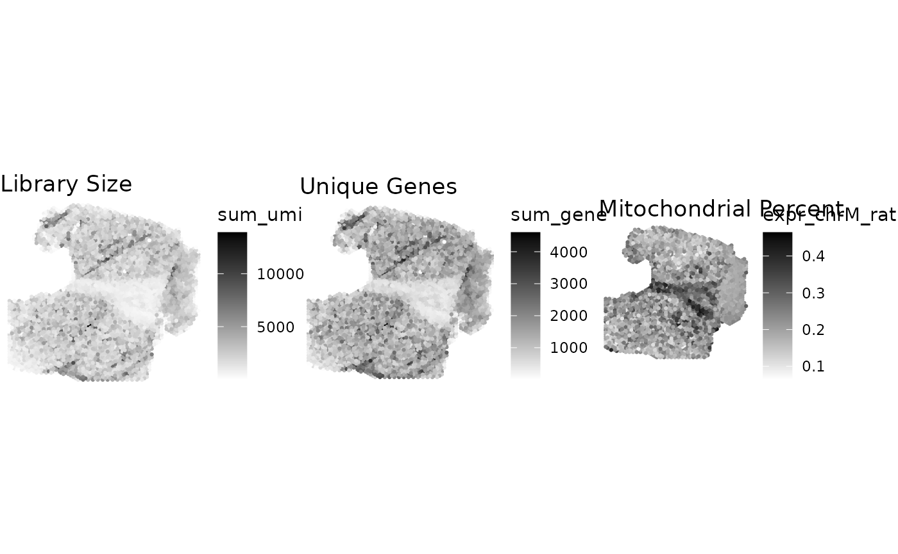

Getting started with 'SpotSweeper'
Michael Totty
Johns Hopkins Bloomberg School of Public Health, Baltimore, MD, USABoyi Guo
Johns Hopkins Bloomberg School of Public Health, Baltimore, MD, USAStephanie Hicks
Johns Hopkins Bloomberg School of Public Health, Baltimore, MD, USA2024-03-21
Source:vignettes/getting_started.Rmd
getting_started.RmdIntroduction
SpotSweeper is an R package for spatial transcriptomics
data quality control (QC). It provides functions for detecting and
visualizing spot-level local outliers and artifacts using
spatially-aware methods. The package is designed to work with SpatialExperiment
objects, and is compatible with data from 10X Genomics Visium and other
spatial transcriptomics platforms.
Installation
Currently, the only way to install SpotSweeper is by
downloading the development version which can be installed from GitHub using the
following:
if (!require("devtools")) install.packages("devtools")
remotes::install_github("MicTott/SpotSweeper")
}Once accepted in Bioconductor,
SpotSweeper will be installable using:
if (!requireNamespace("BiocManager", quietly = TRUE)) {
install.packages("BiocManager")
}
BiocManager::install("SpotSweeper")Spot-level local outlier detection
Loading example data
Here we’ll walk you through the standard workflow for using
‘SpotSweeper’ to detect and visualize local outliers in spatial
transcriptomics data. We’ll use the Visium_humanDLPFC
dataset from the STexampleData package, which is a
SpatialExperiment object.
Because local outliers will be saved in the colData of
the SpatialExperiment object, we’ll first view the
colData and drop out-of-tissue spots before calculating
quality control (QC) metrics and running SpotSweeper.
library(SpotSweeper)
# load Maynard et al DLPFC daatset
spe <- STexampleData::Visium_humanDLPFC()
# show column data before SpotSweeper
colnames(colData(spe))
#> [1] "barcode_id" "sample_id" "in_tissue" "array_row" "array_col"
#> [6] "ground_truth" "cell_count"
# drop out-of-tissue spots
spe <- spe[, spe$in_tissue == 1]Calculating QC metrics using scuttle
We’ll use the scuttle package to calculate QC metrics.
To do this, we’ll need to first change the rownames from
gene id to gene names. We’ll then get the mitochondrial transcripts and
calculate QC metrics for each spot using
scuttle::addPerCellQCMetrics.
# change from gene id to gene names
rownames(spe) <- rowData(spe)$gene_name
# identifying the mitochondrial transcripts
is.mito <- rownames(spe)[grepl("^MT-", rownames(spe))]
# calculating QC metrics for each spot using scuttle
spe<- scuttle::addPerCellQCMetrics(spe, subsets=list(Mito=is.mito))
colnames(colData(spe))
#> [1] "barcode_id" "sample_id" "in_tissue"
#> [4] "array_row" "array_col" "ground_truth"
#> [7] "cell_count" "sum" "detected"
#> [10] "subsets_Mito_sum" "subsets_Mito_detected" "subsets_Mito_percent"
#> [13] "total"Identifying local outliers using SpotSweeper
We can now use SpotSweeper to identify local outliers in
the spatial transcriptomics data. We’ll use the
localOutliers function to detect local outliers based on
the unique detected genes, total library size, and percent of the total
reads that are mitochondrial. These methods assume a normal
distribution, so we’ll use the log-transformed sum of the counts and the
log-transformed number of detected genes. For mitochondrial percent,
we’ll use the raw mitochondrial percentage.
# library size
spe <- localOutliers(spe, metric="sum",direction="lower", log=TRUE)
# unique genes
spe <- localOutliers(spe, metric="detected", direction="lower", log=TRUE)
# mitochondrial percent
spe <- localOutliers(spe, metric="subsets_Mito_percent", direction="higher", log=FALSE)The localOutlier function automatically outputs the
results to the colData with the naming convention
X_outliers, where X is the name of the input
colData. We can then combine all outliers into a single
column called local_outliers in the colData of
the SpatialExperiment object.
# combine all outliers into "local_outliers" column
spe$local_outliers <- as.logical(spe$sum_outliers) |
as.logical(spe$detected_outliers) |
as.logical(spe$subsets_Mito_percent_outliers)Visualizing local outliers
We can visualize the local outliers using the
plotOutliers function. This function creates a scatter plot
of the specified metric and highlights the local outliers in red using
the escheR package. Here, we’ll visualize local outliers of
library size, unique genes, mitochondrial percent, and finally, all
local outliers. We’ll then arrange these plots in a grid using
ggpubr::arrange.
library(escheR)
library(ggpubr)
# library size
p1 <- plotOutliers(spe, metric="sum_log2",
outliers="sum_outliers", point_size=1.1) +
ggtitle("Library Size")
# unique genes
p2 <- plotOutliers(spe, metric="detected_log2",
outliers="detected_outliers", point_size=1.1) +
ggtitle("Unique Genes")
# mitochondrial percent
p3 <- plotOutliers(spe, metric="subsets_Mito_percent",
outliers="subsets_Mito_percent_outliers", point_size=1.1) +
ggtitle("Mitochondrial Percent")
# all local outliers
p4 <- plotOutliers(spe, metric="sum_log2",
outliers="local_outliers", point_size=1.1, stroke=0.75) +
ggtitle("All Local Outliers")
# plot
plot_list <- list(p1, p2, p3, p4)
ggarrange(
plotlist = plot_list,
ncol = 2, nrow = 2,
common.legend = FALSE
)
Removing technical artifacts using SpotSweeper
Loading example data
# load in DLPFC sample with hangnail artifact
data(DLPFC_artifact)
spe <- DLPFC_artifact
# inspect colData before artifact detection
colnames(colData(spe))
#> [1] "sample_id" "in_tissue" "array_row"
#> [4] "array_col" "key" "sum_umi"
#> [7] "sum_gene" "expr_chrM" "expr_chrM_ratio"
#> [10] "ManualAnnotation" "subject" "region"
#> [13] "sex" "age" "diagnosis"
#> [16] "sample_id_complete" "count" "sizeFactor"Visualizing technical artifacts
Technical artifacts can commonly be visualized by standard QC
metrics, including library size, unique genes, or mitochondrial
percentage. We can first visualize the technical artifacts using the
plotOutliers function. This function plots the Visium spots
with the specified QC metric.We’ll then again arrange these plots using
ggpubr::arrange.
# library size
p1 <- plotOutliers(spe, metric="sum_umi",
outliers=NULL, point_size=1.1) +
ggtitle("Library Size")
# unique genes
p2 <- plotOutliers(spe, metric="sum_gene",
outliers=NULL, point_size=1.1) +
ggtitle("Unique Genes")
# mitochondrial percent
p3 <- plotOutliers(spe, metric="expr_chrM_ratio",
outliers=NULL, point_size=1.1) +
ggtitle("Mitochondrial Percent")
# plot
plot_list <- list(p1, p2, p3)
ggarrange(
plotlist = plot_list,
ncol = 3, nrow = 1,
common.legend = FALSE
)
Identifying artifacts using SpotSweeper
We can then use the findArtifacts function to identify
artifacts in the spatial transcriptomics (data. This function identifies
technical artifacts based on the first principle component of the local
variance of the specified QC metric (mito_percent) at
numerous neighorhood sizes (n_rings=5). Currently,
kmeans clustering is used to cluster the technical artifact
vs high-quality Visium spots. Similar to localOutliers, the
findArtifacts function then outputs the results to the
colData.
# find artifacts using SpotSweeper
spe <- findArtifacts(spe,
mito_percent="expr_chrM_ratio",
mito_sum="expr_chrM",
n_rings=5,
name="artifact"
)
# check that "artifact" is now in colData
colnames(colData(spe))
#> [1] "sample_id" "in_tissue" "array_row"
#> [4] "array_col" "key" "sum_umi"
#> [7] "sum_gene" "expr_chrM" "expr_chrM_ratio"
#> [10] "ManualAnnotation" "subject" "region"
#> [13] "sex" "age" "diagnosis"
#> [16] "sample_id_complete" "count" "sizeFactor"
#> [19] "expr_chrM_ratio_log2" "expr_chrM_log2" "coords"
#> [22] "k6" "k18" "k36"
#> [25] "k60" "k90" "Kmeans"
#> [28] "artifact"Visualizing artifacts
We can visualize the artifacts using the escheR package.
Here, we’ll visualize the artifacts using the make_escheR
function and arrange these plots using ggpubr::arrange.
plotOutliers(spe, metric="expr_chrM_ratio",
outliers="artifact", point_size=1.1) +
ggtitle("Hangnail artifact")# Session information
utils::sessionInfo()
#> R version 4.3.3 (2024-02-29)
#> Platform: x86_64-pc-linux-gnu (64-bit)
#> Running under: Ubuntu 22.04.4 LTS
#>
#> Matrix products: default
#> BLAS: /usr/lib/x86_64-linux-gnu/openblas-pthread/libblas.so.3
#> LAPACK: /usr/lib/x86_64-linux-gnu/openblas-pthread/libopenblasp-r0.3.20.so; LAPACK version 3.10.0
#>
#> locale:
#> [1] LC_CTYPE=C.UTF-8 LC_NUMERIC=C LC_TIME=C.UTF-8
#> [4] LC_COLLATE=C.UTF-8 LC_MONETARY=C.UTF-8 LC_MESSAGES=C.UTF-8
#> [7] LC_PAPER=C.UTF-8 LC_NAME=C LC_ADDRESS=C
#> [10] LC_TELEPHONE=C LC_MEASUREMENT=C.UTF-8 LC_IDENTIFICATION=C
#>
#> time zone: UTC
#> tzcode source: system (glibc)
#>
#> attached base packages:
#> [1] stats4 stats graphics grDevices utils datasets methods
#> [8] base
#>
#> other attached packages:
#> [1] ggpubr_0.6.0 escheR_1.2.0
#> [3] ggplot2_3.5.0 STexampleData_1.10.1
#> [5] SpatialExperiment_1.12.0 SingleCellExperiment_1.24.0
#> [7] SummarizedExperiment_1.32.0 Biobase_2.62.0
#> [9] GenomicRanges_1.54.1 GenomeInfoDb_1.38.8
#> [11] IRanges_2.36.0 S4Vectors_0.40.2
#> [13] MatrixGenerics_1.14.0 matrixStats_1.2.0
#> [15] ExperimentHub_2.10.0 AnnotationHub_3.10.0
#> [17] BiocFileCache_2.10.1 dbplyr_2.5.0
#> [19] BiocGenerics_0.48.1 SpotSweeper_0.99.1
#>
#> loaded via a namespace (and not attached):
#> [1] DBI_1.2.2 bitops_1.0-7
#> [3] rlang_1.1.3 magrittr_2.0.3
#> [5] compiler_4.3.3 RSQLite_2.3.5
#> [7] DelayedMatrixStats_1.24.0 png_0.1-8
#> [9] systemfonts_1.0.6 vctrs_0.6.5
#> [11] pkgconfig_2.0.3 crayon_1.5.2
#> [13] fastmap_1.1.1 backports_1.4.1
#> [15] magick_2.8.3 XVector_0.42.0
#> [17] ellipsis_0.3.2 labeling_0.4.3
#> [19] scuttle_1.12.0 utf8_1.2.4
#> [21] promises_1.2.1 rmarkdown_2.26
#> [23] ragg_1.3.0 purrr_1.0.2
#> [25] bit_4.0.5 xfun_0.42
#> [27] beachmat_2.18.1 zlibbioc_1.48.2
#> [29] cachem_1.0.8 jsonlite_1.8.8
#> [31] blob_1.2.4 highr_0.10
#> [33] later_1.3.2 DelayedArray_0.28.0
#> [35] BiocParallel_1.36.0 interactiveDisplayBase_1.40.0
#> [37] broom_1.0.5 parallel_4.3.3
#> [39] R6_2.5.1 bslib_0.6.1
#> [41] car_3.1-2 jquerylib_0.1.4
#> [43] Rcpp_1.0.12 knitr_1.45
#> [45] httpuv_1.6.14 Matrix_1.6-5
#> [47] tidyselect_1.2.1 abind_1.4-5
#> [49] yaml_2.3.8 codetools_0.2-19
#> [51] curl_5.2.1 lattice_0.22-5
#> [53] tibble_3.2.1 withr_3.0.0
#> [55] KEGGREST_1.42.0 shiny_1.8.0
#> [57] evaluate_0.23 desc_1.4.3
#> [59] Biostrings_2.70.3 pillar_1.9.0
#> [61] BiocManager_1.30.22 filelock_1.0.3
#> [63] carData_3.0-5 generics_0.1.3
#> [65] RCurl_1.98-1.14 BiocVersion_3.18.1
#> [67] sparseMatrixStats_1.14.0 munsell_0.5.0
#> [69] scales_1.3.0 xtable_1.8-4
#> [71] glue_1.7.0 tools_4.3.3
#> [73] BiocNeighbors_1.20.2 ggsignif_0.6.4
#> [75] fs_1.6.3 cowplot_1.1.3
#> [77] grid_4.3.3 tidyr_1.3.1
#> [79] AnnotationDbi_1.64.1 colorspace_2.1-0
#> [81] GenomeInfoDbData_1.2.11 cli_3.6.2
#> [83] rappdirs_0.3.3 textshaping_0.3.7
#> [85] fansi_1.0.6 viridisLite_0.4.2
#> [87] S4Arrays_1.2.1 dplyr_1.1.4
#> [89] gtable_0.3.4 rstatix_0.7.2
#> [91] sass_0.4.9 digest_0.6.35
#> [93] SparseArray_1.2.4 farver_2.1.1
#> [95] rjson_0.2.21 memoise_2.0.1
#> [97] htmltools_0.5.7 pkgdown_2.0.7
#> [99] lifecycle_1.0.4 httr_1.4.7
#> [101] mime_0.12 bit64_4.0.5
#> [103] MASS_7.3-60.0.1